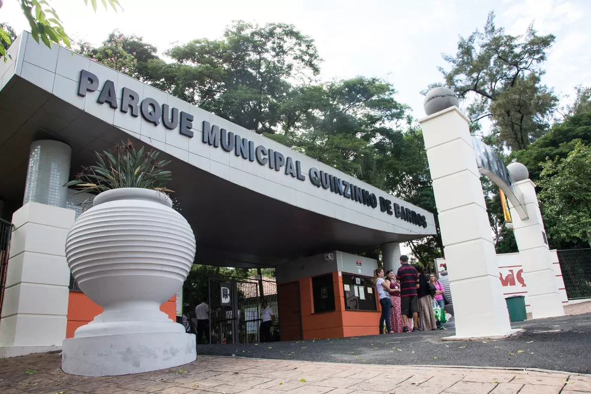

Sorocaba
História, Indústria e Cultura no Interior Paulista
História
Sorocaba foi fundada em 15 de agosto de 1654 por Baltasar Fernandes, um bandeirante paulista. Seu nome vem do tupi e significa algo como “rio das águas grandes”.
Durante os séculos XVII e XVIII, a cidade se destacou como polo agrícola e posteriormente como importante centro de ferro e metalurgia, especialmente na produção de armas e implementos agrícolas. No século XIX, a chegada da Estrada de Ferro Sorocabana consolidou a cidade como ponto estratégico de comércio e transporte no interior paulista.
Pontos turísticos
Sorocaba combina história, cultura e lazer:
• Parque Zoológico Municipal Quinzinho de Barros – um dos maiores e mais visitados zoológicos do estado, com espécies nativas e exóticas.
• Parque Natural da Água Vermelha “João Câncio Pereira” – área verde para caminhadas, esportes e lazer.
• Catedral Metropolitana de Sorocaba – marco histórico e religioso da cidade.
• Centro Histórico – preserva casarões coloniais, igrejas e praças antigas.
• Museu Histórico Sorocabano – abriga objetos e documentos que contam a história local.
• Escola Técnica e Teatro Municipal Teotônio Vilela – espaços de cultura e educação.
Curiosidades
• Sorocaba é conhecida como “Cidade da Indústria e do Comércio”, por seu forte setor industrial e logístico.
• Possui uma das melhores qualidades de vida do interior paulista, com infraestrutura urbana moderna.
• Foi pioneira no uso de energia elétrica e iluminação pública no interior de São Paulo.
• A cidade tem tradição na indústria metalúrgica, com muitas empresas focadas em máquinas e implementos.
• Realiza eventos culturais e esportivos de grande porte, atraindo visitantes da região.
Cultura e Gastronomia
A cultura de Sorocaba é marcada pela preservação histórica e pelo incentivo às artes, com teatros, museus e festivais locais.
Na gastronomia, a cidade oferece pratos típicos do interior paulista, com destaque para a comida caseira e caipira, além de pizzarias, restaurantes italianos e culinária contemporânea. Bares e cafés movimentam a vida urbana e a vida noturna da cidade.
Voltar